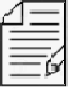
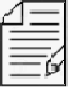

RETIREMENT CALCULATOR V23.10.1

SCENARIO: |
 |
OR ENTER NEW NAME | |
SCENARIO: |
RETIREMENT CALCULATOR V23.10.1
SCENARIO: |
 |
OR ENTER NEW NAME | |
SCENARIO: |

Load data from a file!
FIELD AND VALUE ENTRIES
Enter your fields and values!
YOUR NET WORTH RESULTS
Here is the Math!
Checkout the year details!
Describe your Scenario!
Field Definition Details!
Welcome to the Retirement Calculator!
This tool will allow you to test various simulations of your retirement financing model.
You can create varied scenerios, each with a unique name, and they will all save on your local device to view again later.
You can scenerio models to a file to archive or share them with other devices.
You can scenario models that have been saved by you or a friend or family member.
You can to clear out everthing that was done or saved and start again fresh